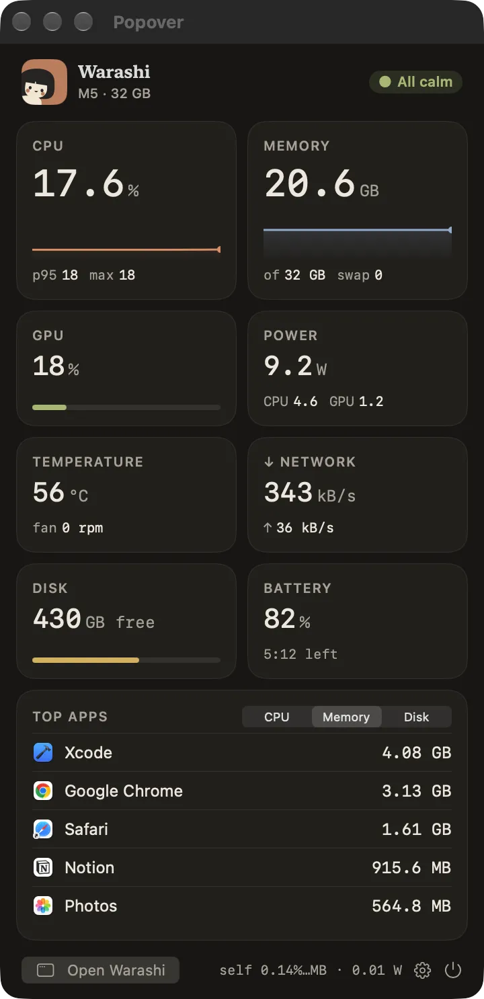
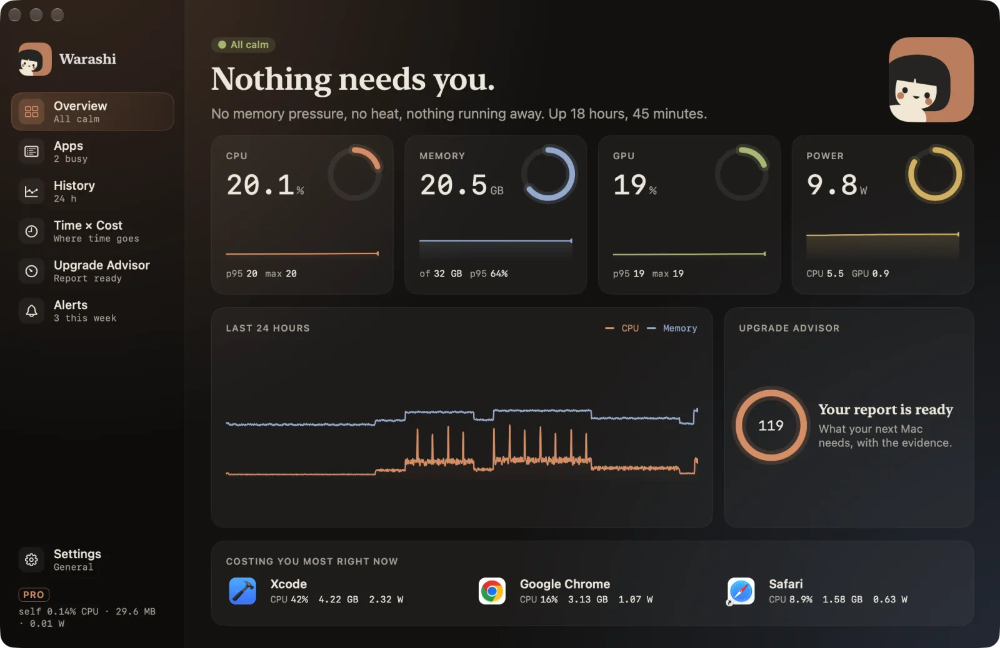

Warashi starts measuring the moment it opens. Here's a short walk through the places you'll use most, and what to expect in the days after.
- Glance at the menu bar
The number beside the spirit is live. If it turns into a warning with ▲, something needs you: click it to see what.

- Click the spirit for the popover
The popover shows CPU, memory, GPU, power, temperature, network, disk and battery, plus the busiest apps. Click outside it or press Escape to close it. More in Menu bar & popover.

The popover. - Hover the notch
On a MacBook with a notch, rest the pointer on the notch for a moment and it opens into a mini dashboard. Move away and it closes. More in Notch & island.

The notch, open. - Open the window
Press ⌘O in the popover or click the open notch. The window has Overview, Apps, History, Time × Cost, Upgrade Advisor, Alerts and Settings in the sidebar. See The window & Overview.

The window opens on Overview. - Let it record
Leave Warashi running. History fills in from the first minute, the Upgrade Advisor gives a first look after 7 days and its full report after 30, and Time × Cost shows your days if you turned activity recording on.
Keyboard shortcuts
| Keys | Where | What it does |
|---|---|---|
| ⌘O | Popover | Open the window |
| ⌘1–⌘6 | Window | Overview, Apps, History, Time × Cost, Upgrade Advisor, Alerts |
| ⌘, | Popover or window | Settings |
| Esc | Popover, app drawer | Close |